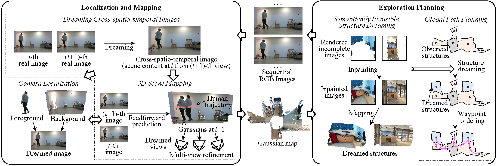
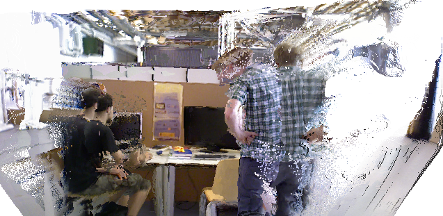
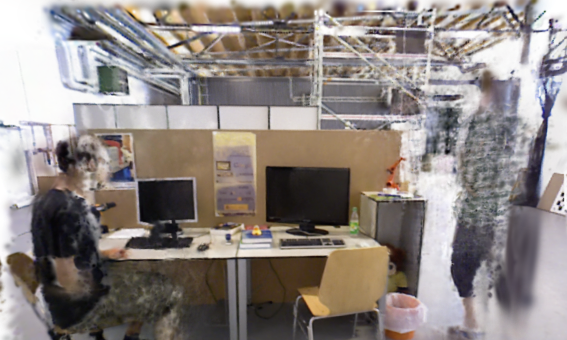
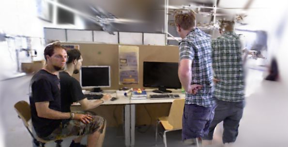
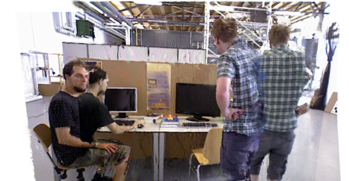

In addition to the core tasks of simultaneous localization and mapping (SLAM), active SLAM additionally involves generating robot actions that enable effective and efficient exploration of unknown environments. However, existing active SLAM pipelines are limited by three main factors: (1) relying on off-the-shelf SLAM modules or assuming static scenes, (2) shortsighted motion planning lacking long-term vision with frequent backtracking, and (3) tracking failures caused by dynamic objects.
To address these limitations, we propose Dream-SLAM, a novel monocular active SLAM method based on dreaming cross-spatio-temporal images and semantically plausible structures of partially observed dynamic environments. The generated cross-spatio-temporal images are fused with real observations to establish foreground constraints, leading to robust camera pose estimation and coherent 3D Gaussian mapping. Furthermore, we integrate dreamed and observed scene structures for long-horizon global exploration planning, producing farsighted trajectories that promote efficient and thorough exploration.
A unified active SLAM framework integrating dreaming mechanisms across localization, 3D mapping, and farsighted trajectory planning.

Novel-view dynamic rendering comparisons against state-of-the-art dynamic SLAM methods on benchmark datasets.




Novel-view rendering comparisons on Sequence wk_xyz of the TUM dataset. Dream-SLAM faithfully reconstructs both dynamic foreground and fine static background.
Top-down comparison of exploration trajectories and reconstructed scenes. By predicting semantically plausible structures, Dream-SLAM plans more efficient paths and significantly reduces total travel distance.
| Method | TUM Avg RMSE (cm) ↓ | TUM Avg SD (cm) ↓ | Bonn Avg RMSE (cm) ↓ | Bonn Avg SD (cm) ↓ |
|---|---|---|---|---|
| ORB-SLAM3 | 10.31 | 3.94 | 34.05 | 16.30 |
| MonST3R | 21.37 | 10.73 | 15.67 | 8.13 |
| RoDyn-SLAM | 5.31 | 2.49 | 11.25 | 4.00 |
| PG-SLAM | 4.50 | 1.81 | 6.47 | 2.27 |
| WildGS-SLAM | 1.28 | 0.65 | 2.52 | 1.27 |
| Dream-SLAM (Ours) | 1.27 | 0.48 | 1.67 | 0.52 |
Deployed on an autonomous mobile robot platform equipped with monocular RGB-D sensing navigating through complex dynamic human environments.
@article{anonymous2026dreamslam,
title = {Dream-SLAM: Dreaming the Unseen for Active SLAM in Dynamic Environments},
author = {Anonymous Authors},
journal = {Under Peer Review},
year = {2026},
url = {https://anonymous.4open.science/r/Dream-SLAM}
}